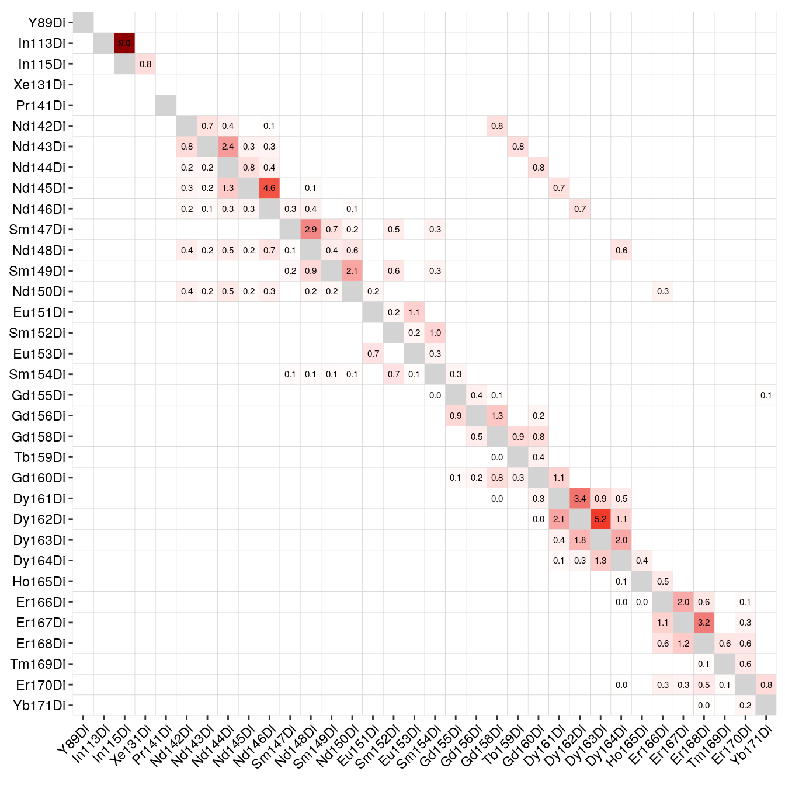
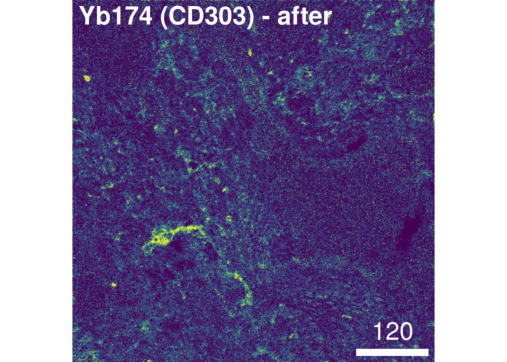

6 Spillover correction
Original scripts: Vito Zanotelli, adapted/maintained by: Nils Eling
This section highlights how to generate a spillover matrix from individually acquired single metal spots on an agarose slide. Each spot needs to be imaged as its own acquisition/ROI and individual TXT files containing the pixel intensities per spot need to be available. For complete details on the spillover correction approach, please refer to the original publication (Chevrier et al. 2017).
Spillover slide preparation:
- Prepare 2% agarose in double distilled H\(_2\)O in a beaker and melt it in a microwave until well dissolved.
- Dip a blank superfrost plus glass microscope slide into the agarose and submerge it until the label.
- Remove the slide and prop it up against a support to allow the excess agarose to run off onto paper towels.
- Allow the slide to dry completely (at least 30 minutes).
- Retrieve all the antibody conjugates used in the panel for which the spillover matrix is to be generated and place them on ice.
- Arrange them in a known order (e.g., mass of the conjugated metal).
- Pipette 0.3 µl spots of 0.4% trypan blue dye into an array on the slide. Prepare one spot per antibody, and make sure the spots are well separated.
- Pipette 0.3 µl of each antibody conjugate (usually at 0.5 mg/ml) onto a unique blue spot, taking care to avoid different antibodies bleeding into each other. Note the exact location of each conjugate on the slide.
- Let the spots dry completely, at least 1 hour.
Spillover slide acquisition:
- Create a JPEG or PNG image of the slide using a mobile phone camera or flat-bed scanner.
- In the CyTOF software, create a new file and import the slide image into it.
- Create a panorama across all the spots to visualize their locations.
- Within each spot, create a region of interest (ROI) with a width of 200 pixels and a height of 10 pixels.
- Name each ROI with the mass and name of the metal conjugate contained in the spot, e.g “Ir193” or “Ho165”. This will be how each TXT file is named.
- Set the profiling type of each ROI to “Local”.
- Apply the antibody panel to all the ROIs. This panel should contain all (or more) of the isotopes in the panel, with the correct metal specified. For example: if the metal used is Barium 138, make sure this, rather than Lanthanum 138, is selected.
- Save the file, make sure “Generate Text File” is selected, and start the acquisition.
This procedure will generate an MCD file similar to the one available on zenodo: 10.5281/zenodo.5949115
The original code of the spillover correction manuscript is available on Github here; however, due to changes in the CATALYST package, users were not able to reproduce the analysis using the newest software versions. The following workflow uses the newest package versions to generate a spillover matrix and perform spillover correction.
In brief, the highlighted workflow comprises 9 steps:
- Reading in the data
- Quality control
- (Optional) pixel binning
- “Debarcoding” for pixel assignment
- Pixel selection for spillover matrix estimation
- Spillover matrix generation
- Saving the results
- Single-cell compensation
- Image compensation
6.1 Generate the spillover matrix
In the first step, we will generate a spillover matrix based on the single-metal spots and save it for later use.
6.1.1 Read in the data
Here, we will read in the individual TXT files into a SingleCellExperiment
object. This object can be used directly by the CATALYST package to estimate
the spillover.
For this to work, the TXT file names need to contain the spotted metal isotope
name. By default, the first occurrence of the isotope in the format (mt)(mass)
(e.g. Sm152 for Samarium isotope with the atomic mass 152) will be used as
spot identifier. Alternatively, a named list of already read-in pixel intensities
can be provided. For more information, please refer to the man page ?readSCEfromTXT.
For further downstream analysis, we will asinh-transform the data using a cofactor of 5; a common transformation for CyTOF data (Bendall et al. 2011). As the pixel intensities are larger than the cell intensities, the cofactor here is larger than the cofactor when transforming the mean cell intensities.
library(imcRtools)
# Create SingleCellExperiment from TXT files
sce <- readSCEfromTXT("data/compensation/") ## Spotted channels: Y89, In113, In115, Pr141, Nd142, Nd143, Nd144, Nd145, Nd146, Sm147, Nd148, Sm149, Nd150, Eu151, Sm152, Eu153, Sm154, Gd155, Gd156, Gd158, Tb159, Gd160, Dy161, Dy162, Dy163, Dy164, Ho165, Er166, Er167, Er168, Tm169, Er170, Yb171, Yb172, Yb173, Yb174, Lu175, Yb176
## Acquired channels: Ar80, Y89, In113, In115, Xe131, Xe134, Ba136, La138, Pr141, Nd142, Nd143, Nd144, Nd145, Nd146, Sm147, Nd148, Sm149, Nd150, Eu151, Sm152, Eu153, Sm154, Gd155, Gd156, Gd158, Tb159, Gd160, Dy161, Dy162, Dy163, Dy164, Ho165, Er166, Er167, Er168, Tm169, Er170, Yb171, Yb172, Yb173, Yb174, Lu175, Yb176, Ir191, Ir193, Pt196, Pb206
## Channels spotted but not acquired:
## Channels acquired but not spotted: Ar80, Xe131, Xe134, Ba136, La138, Ir191, Ir193, Pt196, Pb2066.1.2 Quality control
In the next step, we will observe the median pixel intensities per spot and threshold on medians < 200 counts. These types of visualization serve two purposes:
Small median pixel intensities (< 200 counts) might hinder the robust estimation of the channel spillover. In that case, consecutive pixels can be summed (see Optional pixel binning).
Each spotted metal (row) should show the highest median pixel intensity in its corresponding channel (column). If this is not the case, either the naming of the TXT files was incorrect or the incorrect metal was spotted.

As we can see, nearly all median pixel intensities are > 200 counts for each spot. We also observe acquired channels for which no spot was placed (e.g., Xe134, Ir191, Ir193).
6.1.3 Optional pixel binning
In cases where median pixel intensities are low (< 200 counts), consecutive
pixels can be summed to increase the robustness of the spillover estimation.
The imcRtools package provides the binAcrossPixels function,
which performs aggregation for each channel across bin_size consecutive pixels
per spotted metal.
# Define grouping
bin_size = 10
sce2 <- binAcrossPixels(sce, bin_size = bin_size)
# Log10 median pixel counts per spot and channel
plotSpotHeatmap(sce2)

Here, we can see an increase in the median pixel intensities and accumulation of off-diagonal signal. Due to already high original pixel intensities, we will refrain from aggregating across consecutive pixels for this demonstration.
6.1.4 Filtering incorrectly assigned pixels
The following step uses functions provided by the CATALYST package to
“debarcode” the pixels. Based on the intensity distribution of all channels,
pixels are assigned to their corresponding barcode; here this is the already
known metal spot. This procedure serves the purpose to identify pixels that
cannot be robustly assigned to the spotted metal. Pixels of such kind can be
regarded as “noisy”, “background” or “artefacts” that should be removed prior to
spillover estimation.
We will also need to specify which channels were spotted (argument bc_key).
This information is directly contained in the colData(sce) slot.
To facilitate visualization, we will order the bc_key by mass.
The general workflow for pixel debarcoding is as follows:
- assign a preliminary metal mass to each pixel
- for each pixel, estimate a cutoff parameter for the distance between positive and negative pixel sets
- apply the estimated cutoffs to identify truly positive pixels
library(CATALYST)
bc_key <- as.numeric(unique(sce$sample_mass))
bc_key <- bc_key[order(bc_key)]
sce <- assignPrelim(sce, bc_key = bc_key)
sce <- estCutoffs(sce)
sce <- applyCutoffs(sce)The obtained SingleCellExperiment now contains the additional bc_id entry.
For each pixel, this vector indicates the assigned mass (e.g. 161) or
0, meaning unassigned.
This information can be visualized in form of a heatmap:
library(pheatmap)
cur_table <- table(sce$bc_id, sce$sample_mass)
# Visualize the correctly and incorrectly assigned pixels
pheatmap(log10(cur_table + 1),
cluster_rows = FALSE,
cluster_cols = FALSE)
## 113 115 141 142 143 144 145 146 147 148 149
## 0.1985 0.1060 0.2575 0.3195 0.3190 0.3825 0.3545 0.4280 0.3570 0.4770 0.4200
## 150 151 152 153 154 155 156 158 159 160 161
## 0.4120 0.4025 0.4050 0.4630 0.4190 0.4610 0.3525 0.4020 0.4655 0.4250 0.5595
## 162 163 164 165 166 167 168 169 170 171 172
## 0.4340 0.4230 0.4390 0.4055 0.5210 0.3900 0.3285 0.3680 0.5015 0.4900 0.5650
## 173 174 175 176 89
## 0.3125 0.4605 0.4710 0.2845 0.3015We can see here, that all pixels were assigned to the right mass and that all pixel sets are made up of > 800 pixels.
However, in cases where incorrect assignment occurred or where few pixels were
measured for some spots, the imcRtools package exports a simple helper
function to exclude pixels based on these criteria:
In the filterPixels function, the minevents parameter specifies the threshold
under which correctly assigned pixel sets are excluded from spillover
estimation. The correct_pixels parameter indicates whether pixels that were
assigned to masses other than the spotted mass should be excluded from spillover
estimation. The default values often result in sufficient pixel filtering;
however, if very few pixels (~100) are measured per spot, the minevents
parameter value needs to be lowered.
6.1.5 Compute spillover matrix
Based on the single-positive pixels, we use the CATALYST::computeSpillmat()
function to compute the spillover matrix and CATALYST::plotSpillmat() to
visualize it. The plotSpillmat function checks the spotted and acquired
metal isotopes against a pre-defined CATALYST::isotope_list(). In this data,
the Ar80 channel was additionally acquired to check for deviations in signal
intensity. Ar80 needs to be added to a custom isotope_list object for
visualization.
sce <- computeSpillmat(sce)
isotope_list <- CATALYST::isotope_list
isotope_list$Ar <- 80
plotSpillmat(sce, isotope_list = isotope_list)## Warning: The `guide` argument in `scale_*()` cannot be `FALSE`. This was deprecated in
## ggplot2 3.3.4.
## ℹ Please use "none" instead.
## ℹ The deprecated feature was likely used in the CATALYST package.
## Please report the issue at <https://github.com/HelenaLC/CATALYST/issues>.
## This warning is displayed once every 8 hours.
## Call `lifecycle::last_lifecycle_warnings()` to see where this warning was
## generated.
Of note: the visualization of the spillover matrix using CATALYST does currently not visualize spillover between the larger channels. In this case, the spillover matrix is clipped at Yb171.
As we can see, the largest spillover appears in In113 --> In115 and we also
observe the +16 oxide impurities for e.g. Nd148 --> Dy164.
We can save the spillover matrix for external use.
6.2 Single-cell data compensation
The CATALYST package can be used to perform spillover compensation on the
single-cell mean intensities. Here, the SpatialExperiment object generated
in Section 5 is read in. The CATALYST package requires an entry
to rowData(spe)$channel_name for the compCytof function to run. This entry
should contain the metal isotopes in the form (mt)(mass)Di (e.g., Sm152Di for
Samarium isotope with the atomic mass 152).
The compCytof function performs channel spillover compensation on the mean
pixel intensities per channel and cell. Here, we will not overwrite the assays
in the SpatialExperiment object to later highlight the effect of compensation.
As shown in Section 5, also the compensated counts are
asinh-transformed using a cofactor of 1.
spe <- readRDS("data/spe.rds")
rowData(spe)$channel_name <- paste0(rowData(spe)$channel, "Di")
spe <- compCytof(spe, sm,
transform = TRUE, cofactor = 1,
isotope_list = isotope_list,
overwrite = FALSE)To check the effect of channel spillover compensation, the expression of markers that are affected by spillover (e.g., E-cadherin in channel Yb173 and CD303 in channel Yb174) can be visualized in form of scatter plots before and after compensation.
library(dittoSeq)
library(patchwork)
before <- dittoScatterPlot(spe, x.var = "Ecad", y.var = "CD303",
assay.x = "exprs", assay.y = "exprs") +
ggtitle("Before compensation")
after <- dittoScatterPlot(spe, x.var = "Ecad", y.var = "CD303",
assay.x = "compexprs", assay.y = "compexprs") +
ggtitle("After compensation")
before + afterWe observe that the spillover Yb173 –> Yb174 was successfully corrected. To facilitate further downstream analysis, the non-compensated assays can now be replaced by their compensated counterparts:
6.3 Image compensation
The cytomapper package allows channel
spillover compensation directly on multi-channel images.
The compImage function takes a CytoImageList object and the estimated
spillover matrix as input. More info on how to work with CytoImageList
objects can be seen in Section 11.
At this point, we can read in the CytoImageList object containing multi-channel
images as generated in Section 5.
The channelNames need to be set according to their metal isotope in the form
(mt)(mass)Di and therefore match colnames(sm).
library(cytomapper)
images <- readRDS("data/images.rds")
channelNames(images) <- rowData(spe)$channel_nameThe CATALYST package provides the adaptSpillmat function that corrects the
spillover matrix in a way that rows and columns match a predefined set of
metals. Please refer to ?compCytof for more information how metals in the
spillover matrix are matched to acquired channels in the SingleCellExperiment
object.
The spillover matrix can now be adapted to exclude channels that were not kept for downstream analysis.
## Compensation is likely to be inaccurate.
## Spill values for the following interactions
## have not been estimated:## Ir191Di -> Ir193Di## Ir193Di -> Ir191DiThe adapted spillover matrix now matches the channelNames of the
CytoImageList object and can be used to perform pixel-level spillover
compensation. Here, we parallelise the image compensation on all available minus 2 cores. When
working on Windows, you will need to use the SnowParam function instead of
MultiCoreParam.
As a sanity check, we will visualize the image before and after compensation:
# Before compensation
plotPixels(images[5], colour_by = "Yb173Di",
image_title = list(text = "Yb173 (Ecad) - before", position = "topleft"),
legend = NULL, bcg = list(Yb173Di = c(0, 4, 1)))
plotPixels(images[5], colour_by = "Yb174Di",
image_title = list(text = "Yb174 (CD303) - before", position = "topleft"),
legend = NULL, bcg = list(Yb174Di = c(0, 4, 1)))
# After compensation
plotPixels(images_comp[5], colour_by = "Yb173Di",
image_title = list(text = "Yb173 (Ecad) - after", position = "topleft"),
legend = NULL, bcg = list(Yb173Di = c(0, 4, 1)))
plotPixels(images_comp[5], colour_by = "Yb174Di",
image_title = list(text = "Yb174 (CD303) - after", position = "topleft"),
legend = NULL, bcg = list(Yb174Di = c(0, 4, 1)))
For convenience, we will re-set the channelNames to their biological targtes:
6.4 Write out compensated images
In the final step, the compensated images are written out as 16-bit TIFF files:
6.5 Save objects
For further downstream analysis, the compensated SpatialExperiment and
CytoImageList objects are saved replacing the former objects:
6.6 Session Info
SessionInfo
## R version 4.3.2 (2023-10-31)
## Platform: x86_64-pc-linux-gnu (64-bit)
## Running under: Ubuntu 22.04.3 LTS
##
## Matrix products: default
## BLAS: /usr/lib/x86_64-linux-gnu/openblas-pthread/libblas.so.3
## LAPACK: /usr/lib/x86_64-linux-gnu/openblas-pthread/libopenblasp-r0.3.20.so; LAPACK version 3.10.0
##
## locale:
## [1] LC_CTYPE=en_US.UTF-8 LC_NUMERIC=C
## [3] LC_TIME=en_US.UTF-8 LC_COLLATE=en_US.UTF-8
## [5] LC_MONETARY=en_US.UTF-8 LC_MESSAGES=en_US.UTF-8
## [7] LC_PAPER=en_US.UTF-8 LC_NAME=C
## [9] LC_ADDRESS=C LC_TELEPHONE=C
## [11] LC_MEASUREMENT=en_US.UTF-8 LC_IDENTIFICATION=C
##
## time zone: Etc/UTC
## tzcode source: system (glibc)
##
## attached base packages:
## [1] stats4 stats graphics grDevices utils datasets methods
## [8] base
##
## other attached packages:
## [1] testthat_3.2.1 tiff_0.1-12
## [3] BiocParallel_1.36.0 cytomapper_1.14.0
## [5] EBImage_4.44.0 patchwork_1.1.3
## [7] dittoSeq_1.14.0 ggplot2_3.4.4
## [9] pheatmap_1.0.12 CATALYST_1.26.0
## [11] imcRtools_1.8.0 SpatialExperiment_1.12.0
## [13] SingleCellExperiment_1.24.0 SummarizedExperiment_1.32.0
## [15] Biobase_2.62.0 GenomicRanges_1.54.1
## [17] GenomeInfoDb_1.38.5 IRanges_2.36.0
## [19] S4Vectors_0.40.2 BiocGenerics_0.48.1
## [21] MatrixGenerics_1.14.0 matrixStats_1.2.0
##
## loaded via a namespace (and not attached):
## [1] bitops_1.0-7 sf_1.0-15
## [3] RColorBrewer_1.1-3 doParallel_1.0.17
## [5] tools_4.3.2 backports_1.4.1
## [7] utf8_1.2.4 R6_2.5.1
## [9] DT_0.31 HDF5Array_1.30.0
## [11] rhdf5filters_1.14.1 GetoptLong_1.0.5
## [13] withr_2.5.2 sp_2.1-2
## [15] gridExtra_2.3 cli_3.6.2
## [17] archive_1.1.7 sandwich_3.1-0
## [19] labeling_0.4.3 sass_0.4.8
## [21] nnls_1.5 mvtnorm_1.2-4
## [23] readr_2.1.4 proxy_0.4-27
## [25] ggridges_0.5.5 systemfonts_1.0.5
## [27] colorRamps_2.3.1 svglite_2.1.3
## [29] scater_1.30.1 plotrix_3.8-4
## [31] flowCore_2.14.0 generics_0.1.3
## [33] shape_1.4.6 gtools_3.9.5
## [35] vroom_1.6.5 car_3.1-2
## [37] dplyr_1.1.4 Matrix_1.6-4
## [39] RProtoBufLib_2.14.0 ggbeeswarm_0.7.2
## [41] fansi_1.0.6 abind_1.4-5
## [43] terra_1.7-65 lifecycle_1.0.4
## [45] multcomp_1.4-25 yaml_2.3.8
## [47] carData_3.0-5 rhdf5_2.46.1
## [49] SparseArray_1.2.3 Rtsne_0.17
## [51] grid_4.3.2 promises_1.2.1
## [53] crayon_1.5.2 shinydashboard_0.7.2
## [55] lattice_0.21-9 beachmat_2.18.0
## [57] cowplot_1.1.2 magick_2.8.2
## [59] pillar_1.9.0 knitr_1.45
## [61] ComplexHeatmap_2.18.0 RTriangle_1.6-0.12
## [63] rjson_0.2.21 codetools_0.2-19
## [65] glue_1.6.2 data.table_1.14.10
## [67] vctrs_0.6.5 png_0.1-8
## [69] gtable_0.3.4 cachem_1.0.8
## [71] xfun_0.41 S4Arrays_1.2.0
## [73] mime_0.12 tidygraph_1.3.0
## [75] ConsensusClusterPlus_1.66.0 survival_3.5-7
## [77] iterators_1.0.14 cytolib_2.14.0
## [79] units_0.8-5 ellipsis_0.3.2
## [81] TH.data_1.1-2 bit64_4.0.5
## [83] rprojroot_2.0.4 bslib_0.6.1
## [85] irlba_2.3.5.1 svgPanZoom_0.3.4
## [87] vipor_0.4.7 KernSmooth_2.23-22
## [89] colorspace_2.1-0 DBI_1.2.0
## [91] raster_3.6-26 tidyselect_1.2.0
## [93] bit_4.0.5 compiler_4.3.2
## [95] BiocNeighbors_1.20.1 desc_1.4.3
## [97] DelayedArray_0.28.0 bookdown_0.37
## [99] scales_1.3.0 classInt_0.4-10
## [101] distances_0.1.10 stringr_1.5.1
## [103] digest_0.6.33 fftwtools_0.9-11
## [105] rmarkdown_2.25 XVector_0.42.0
## [107] htmltools_0.5.7 pkgconfig_2.0.3
## [109] jpeg_0.1-10 sparseMatrixStats_1.14.0
## [111] highr_0.10 fastmap_1.1.1
## [113] rlang_1.1.2 GlobalOptions_0.1.2
## [115] htmlwidgets_1.6.4 shiny_1.8.0
## [117] DelayedMatrixStats_1.24.0 farver_2.1.1
## [119] jquerylib_0.1.4 zoo_1.8-12
## [121] jsonlite_1.8.8 BiocSingular_1.18.0
## [123] RCurl_1.98-1.13 magrittr_2.0.3
## [125] scuttle_1.12.0 GenomeInfoDbData_1.2.11
## [127] Rhdf5lib_1.24.1 munsell_0.5.0
## [129] Rcpp_1.0.11 ggnewscale_0.4.9
## [131] viridis_0.6.4 stringi_1.8.3
## [133] ggraph_2.1.0 brio_1.1.4
## [135] zlibbioc_1.48.0 MASS_7.3-60
## [137] plyr_1.8.9 parallel_4.3.2
## [139] ggrepel_0.9.4 graphlayouts_1.0.2
## [141] splines_4.3.2 hms_1.1.3
## [143] circlize_0.4.15 locfit_1.5-9.8
## [145] igraph_1.6.0 ggpubr_0.6.0
## [147] ggsignif_0.6.4 pkgload_1.3.3
## [149] reshape2_1.4.4 ScaledMatrix_1.10.0
## [151] XML_3.99-0.16 drc_3.0-1
## [153] evaluate_0.23 tzdb_0.4.0
## [155] foreach_1.5.2 tweenr_2.0.2
## [157] httpuv_1.6.13 tidyr_1.3.0
## [159] purrr_1.0.2 polyclip_1.10-6
## [161] clue_0.3-65 ggforce_0.4.1
## [163] rsvd_1.0.5 broom_1.0.5
## [165] xtable_1.8-4 e1071_1.7-14
## [167] rstatix_0.7.2 later_1.3.2
## [169] viridisLite_0.4.2 class_7.3-22
## [171] tibble_3.2.1 FlowSOM_2.10.0
## [173] beeswarm_0.4.0 cluster_2.1.4
## [175] concaveman_1.1.0